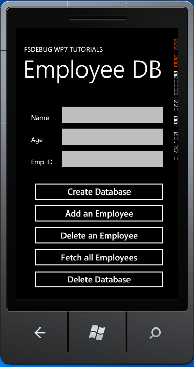

You will may be surprised when to know that in Windows Phone 7, "a local database can be accessed only with LINQ to SQL, Transact-SQL is not supported". "Similar to a desktop application that uses a SQL Server relational database, a Windows Phone application can use a local database to select, insert, update, and delete data by using LINQ to SQL. This allows your Windows Phone applications to benefit from the powerful query capabilities of LINQ and the storage efficiencies of a relational database. Because a phone has fewer resources than a PC, there are a few ways in which a local database differs from a typical database."
Are there special requirements or instructions for building the sample?
All what you need is Visual Studio 2010 Express for Windows Phone that you can download it from here:
http://www.microsoft.com/visualstudio/en-us/products/2010-editions/express-iso
Then just press F5 to run!
Description
How does this sample solve the problem?
With Windows Phone OS 7.1, you can store relational data in a local database that resides in your application’s isolated storage container. Windows Phone applications use LINQ to SQL for all database operations; LINQ to SQL is used to define the database schema, select data, and save changes to the underlying database file residing in isolated storage.

public partial class MainPage : PhoneApplicationPage
{
private const string strConnectionString = @"isostore:/EmployeeDB.sdf";
// Constructor
public MainPage()
{
InitializeComponent();
}
private void button1_Click(object sender, RoutedEventArgs e)
{
//create database
using (EmployeeDataContext Empdb = new EmployeeDataContext(strConnectionString))
{
if (Empdb.DatabaseExists() == false)
{
Empdb.CreateDatabase();
MessageBox.Show("Employee Database Created Successfully!!!");
}
else
{
MessageBox.Show("Employee Database already exists!!!");
}
}
}
private void button2_Click(object sender, RoutedEventArgs e)
{
//Adding data to the local database
using (EmployeeDataContext Empdb = new EmployeeDataContext(strConnectionString))
{
Employee newEmployee = new Employee
{
EmployeeID = Convert.ToInt32(txtEmpid.Text),
EmployeeAge = txtAge.Text.ToString(),
EmployeeName = txtName.Text.ToString()
};
Empdb.Employees.InsertOnSubmit(newEmployee);
Empdb.SubmitChanges();
MessageBox.Show("Employee Added Successfully!!!");
}
}
private void button3_Click(object sender, RoutedEventArgs e)
{
using (EmployeeDataContext Empdb = new EmployeeDataContext(strConnectionString))
{
IQueryable<Employee> EmpQuery = from Emp in Empdb.Employees where Emp.EmployeeName == txtName.Text select Emp;
Employee EmpRemove = EmpQuery.FirstOrDefault();
Empdb.Employees.DeleteOnSubmit(EmpRemove);
Empdb.SubmitChanges();
MessageBox.Show("Employee Deleted Successfully!!!");
}
}
private void button4_Click(object sender, RoutedEventArgs e)
{
IList<Employee> EmployeesList = this.GetEmployeeList();
StringBuilder strBuilder = new StringBuilder();
strBuilder.AppendLine("Employee Details");
foreach (Employee emp in EmployeesList)
{
strBuilder.AppendLine("Name - " + emp.EmployeeName + " Age - " + emp.EmployeeAge);
}
MessageBox.Show(strBuilder.ToString());
}
private void button5_Click(object sender, RoutedEventArgs e)
{
//delete database
using (EmployeeDataContext Empdb = new EmployeeDataContext(strConnectionString))
{
if (Empdb.DatabaseExists())
{
Empdb.DeleteDatabase();
MessageBox.Show("Employee Database Deleted Successfully!!!");
}
}
}
public IList<Employee> GetEmployeeList()
{
// Fetching data from local database
IList<Employee> EmployeeList = null;
using (EmployeeDataContext Empdb = new EmployeeDataContext(strConnectionString))
{
IQueryable<Employee> EmpQuery = from Emp in Empdb.Employees select Emp;
EmployeeList = EmpQuery.ToList();
}
return EmployeeList;
}
}
public partial class MainPage : PhoneApplicationPage { private const string strConnectionString = @"isostore:/EmployeeDB.sdf"; // Constructor public MainPage() { InitializeComponent(); } private void button1_Click(object sender, RoutedEventArgs e) { //create database using (EmployeeDataContext Empdb = new EmployeeDataContext(strConnectionString)) { if (Empdb.DatabaseExists() == false) { Empdb.CreateDatabase(); MessageBox.Show("Employee Database Created Successfully!!!"); } else { MessageBox.Show("Employee Database already exists!!!"); } } } private void button2_Click(object sender, RoutedEventArgs e) { //Adding data to the local database using (EmployeeDataContext Empdb = new EmployeeDataContext(strConnectionString)) { Employee newEmployee = new Employee { EmployeeID = Convert.ToInt32(txtEmpid.Text), EmployeeAge = txtAge.Text.ToString(), EmployeeName = txtName.Text.ToString() }; Empdb.Employees.InsertOnSubmit(newEmployee); Empdb.SubmitChanges(); MessageBox.Show("Employee Added Successfully!!!"); } } private void button3_Click(object sender, RoutedEventArgs e) { using (EmployeeDataContext Empdb = new EmployeeDataContext(strConnectionString)) { IQueryable<Employee> EmpQuery = from Emp in Empdb.Employees where Emp.EmployeeName == txtName.Text select Emp; Employee EmpRemove = EmpQuery.FirstOrDefault(); Empdb.Employees.DeleteOnSubmit(EmpRemove); Empdb.SubmitChanges(); MessageBox.Show("Employee Deleted Successfully!!!"); } } private void button4_Click(object sender, RoutedEventArgs e) { IList<Employee> EmployeesList = this.GetEmployeeList(); StringBuilder strBuilder = new StringBuilder(); strBuilder.AppendLine("Employee Details"); foreach (Employee emp in EmployeesList) { strBuilder.AppendLine("Name - " + emp.EmployeeName + " Age - " + emp.EmployeeAge); } MessageBox.Show(strBuilder.ToString()); } private void button5_Click(object sender, RoutedEventArgs e) { //delete database using (EmployeeDataContext Empdb = new EmployeeDataContext(strConnectionString)) { if (Empdb.DatabaseExists()) { Empdb.DeleteDatabase(); MessageBox.Show("Employee Database Deleted Successfully!!!"); } } } public IList<Employee> GetEmployeeList() { // Fetching data from local database IList<Employee> EmployeeList = null; using (EmployeeDataContext Empdb = new EmployeeDataContext(strConnectionString)) { IQueryable<Employee> EmpQuery = from Emp in Empdb.Employees select Emp; EmployeeList = EmpQuery.ToList(); } return EmployeeList; } }
For more information visit
http://www.c-sharpcorner.com/UploadFile/ae35ca/working-with-creating-a-local-database-in-wp7
where you will find the original tutorial I used.
And you can see:
http://msdn.microsoft.com/en-us/library/hh202860%28v=VS.92%29.aspx
to learn more about Isolated Storage.